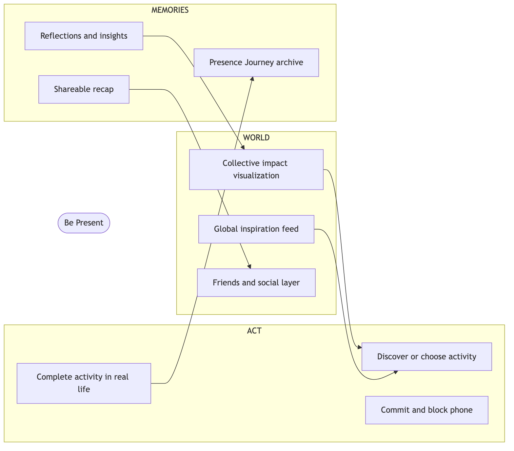
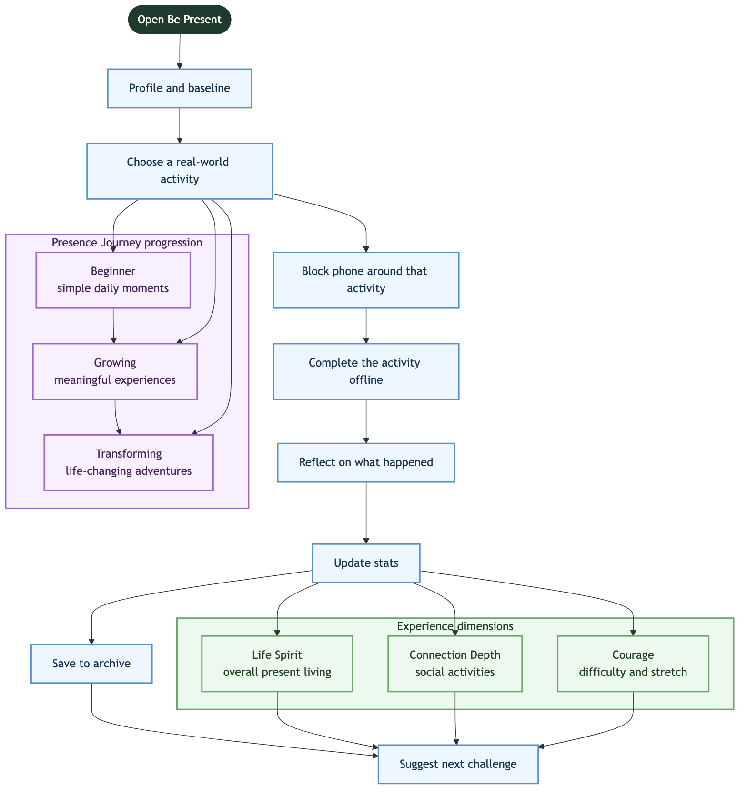
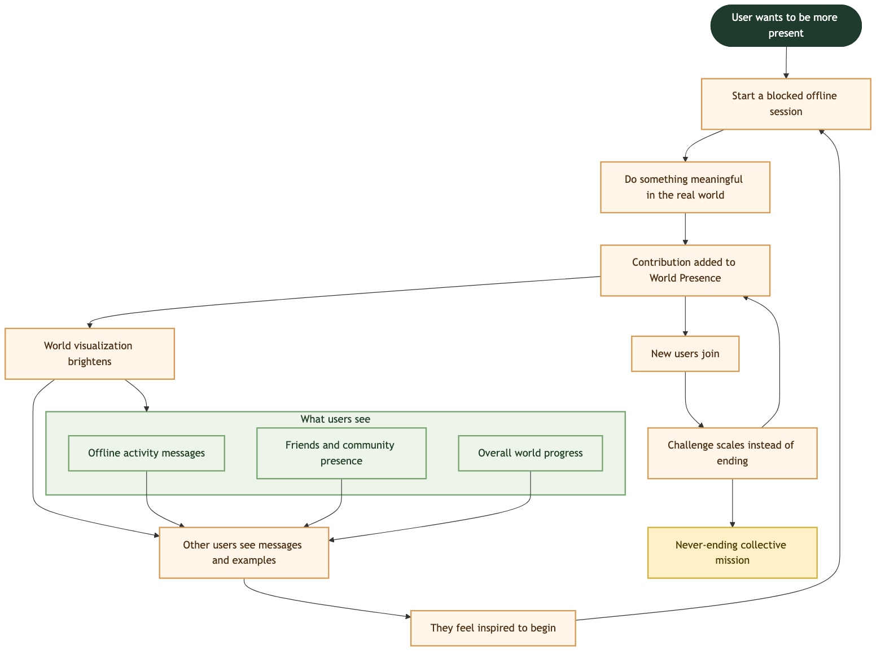

Title
3D VIEW: This entry is designed to support an embedded model viewer — drop a GLB or Sketchfab embed here
when you're ready.
Game developer, designer, and researcher focused on narrative systems, AI tools, player memories, and how we make sense of complex worlds.
Currently: Developing Birdsong in Unity and Bird Brain, an AI hypertext tool for navigating project archives. Open to roles in product, research, AI tools, and game systems.
I design games as umwelten, perceptual worlds that are there to make us notice, feel, and become.
Combining literary analysis with user research builds what our reality doesn't provide: experiences where
attention and hope are built into the fabric of the work, as serious as any mechanic or scene, and where
becoming yourself feels possible again because the world leaves room for it. My work connects that foundation to the systems that make those worlds
feel honest, lived-in, and worth defending.
Latest: Bird Brain — my first custom webtool, built alongside Birdsong, using AI to generate a hypertext concept map you can explore like a video game’s branching dialogue tree. It’s designed to be even better when pointed at projects I’m just beginning to learn.
Experience spans independent game development (Birdsong), ethnographic fieldwork (222), and behavioral game systems design (BePresent). I move between research and hands-on development in Unity and Blender.
Right now Birdsong is in the narrative design and systems prototyping phase. The core cast (8 fully-realized characters with detailed profiles, core needs, and relationship dynamics), a complete narrative structure with 4 acts spanning 13-20 hours, and an environment in development with map prototyping are defined. What's next is turning those ideas into scenes, choices, and small daily interactions that feel honest to college life.
Design work is focused on how investigation and ordinary days interlock— what it feels like to follow a
rumor between classes, how the game guides player choices, and how much of the mystery you can
uncover without ever deliberately "going sleuth mode"— until you have to.
Development moves
between Unity for systems prototyping, Blender for environment and asset work, and extensive
documentation to keep narrative structure tight as the team expands.
What Birdsong is, why Seaview exists, and how the mystery threads through the college life you never quite got.
The Dean’s welcome speech, the first fire, and the moment home away from home stops feeling safe.
A deliberately designed American West coast campus built to feel like the older, cooler life you imagined.
Anemoia as the lense for Birdsong: a college experience you never had, made playable.
How sabotage, investigation, and slow days on campus come together across the semester.
How Romantic literature, PS3‑era mystery games, and internet nostalgia shape the feel of Birdsong.
This thread started with the essay I wrote while I was forming this lense in college: Mourning doves and Melody of Memory. Since then, I translated it into building worlds of my own where mechanics, environments, and story are structured like the way you move through your real life.
But umwelten, to me, is not only about Romantic poetry or video games. It is a language for digital media, tools, places, relationships, and everything else that shapes how a person notices the world. I am not trying to force life into a semiotic framework; I keep returning to this language because it resembles my own passion and philosophy: the belief that every medium, system, and environment teaches us a way of paying attention.
Birdsong is the game I’m making as my own answer to this thread. It’s a third-person single-player mystery adventure set in a picturesque college town in the early 2010s. You are Oliver, returning after summer break to Seaview— an American college and surf town founded to encourage a conscious vision of becoming the older, cooler version of yourself. On your first night back, during the Dean’s annual welcome speech, a fire breaks out. What first seems like a terrible accident soon reveals itself as part of something darker: someone is systematically dismantling Seaview and everything it stands for.
The game is about anemoia— nostalgia for an experience you never had. I grew up imagining the older, cooler self I’d become: the friendships, the discovery, the warmth I watched older kids carry. By the time I got there, a lot of that warmth had already thinned, we reached for each other less, and wanting to become something almost felt embarrassing. Social media patched us with mood boards of the life we thought we’d share, aesthetics of a college we didn’t live; and in mourning what we never touched, a lot of us realized we’d lost something basic: the permission to imagine selves our younger selves could still be proud of. Birdsong is my attempt to build that imagined life as a playable world— not because it was perfect, but because those daydreams still held hope: and the setting is a university made to be somewhere becoming is intentional, where you have space to explore, bored downtime to dream, and freedom to discover your true self— where the older, cooler you isn’t only a fantasy. Romantic literature helped me see people two hundred years ago wrestling with the same problem: what makes everyday life worth showing up for, and how memory— real or imagined— helps you choose vitality over dread. I'm making a mystery adventure inside the umwelt of the college I dreamed— I want a place where 2012's hope is still possible, where we can mourn what we thought was ahead of us and still leave room for becoming in our own real lives.
What I want players to carry back into real life is closer to how defending Seaview feels in the story: to take in the beauty of small moments, connect without irony, dream without justification, and defend beauty even when you understand the reasons to let it die— to trust that dreaming who you want to be is human, not naïve, and that the older, cooler version of yourself is something you’re already living into, not just a fantasy.
BePresent already had a strong vision: support people who feel anxious about their screentime but still want their phone to be part of a meaningful life. I helped develop a design direction that reframes the entire conversation from "I need to use my phone less" to "I am challenging myself to do fulfilling things"— shifting the approach from passive guilt to active possibility.
The three‑module structure (ACT, WORLD, MEMORIES) turns this into a progression system that scales from simple daily moments to life-changing adventures. Activities earn experience across three dimensions— Life Spirit (presence time), Connection Depth (social activities), and Courage (difficulty)— creating a multifaceted path where users discover what kinds of challenges resonate with them. Individual progress feeds into a collective world presence metric, so every completed session illuminates a shared mission.
Hired to design a unified product vision for BePresent: three presence modules (ACT, WORLD, MEMORIES), an activity-based blocking loop, and a world presence system that ties individual habits to a shared mission.
Delivered end‑to‑end design documentation— flows, progression model, activity taxonomy, and blocking behavior— and framed the concept in language that made sense to both players and non‑game stakeholders.
A unified three‑module concept that turns “put your phone down” into “go do something specific in the world.” ACT is where you choose and commit to offline activities, WORLD shows how those choices add up collectively, and MEMORIES becomes the archive of the life you actually lived.
The personal progression system inside BePresent. Activities move users through Beginner (simple daily moments), Growing (meaningful experiences), and Transforming (life-changing adventures)—a path that feels authored without feeling rigid. AI learns from habits and community activity to surface the most resonant prompts for each user.
The ACT tab is the core tracking and behavior layer. You browse or receive suggested activities, set a blocking session around them, and complete them offline. Verification and reflection screens keep the focus on what you did, not on minute‑by‑minute graphs.
The WORLD tab visualizes everyone’s completed activities as a shared presence map instead of a competitive feed. Real‑time messages float around a globe— short descriptions of what people are doing while blocked— so your own sessions feel like part of a wider effort.
The MEMORIES tab collects everything you’ve done into a searchable archive of sessions, reflections, and trends. It also teaches the system when and how to suggest the next block, so nudges come from your own patterns rather than abstract goals.
Attended 60+ events over a year as participant-observer— dinners with strangers, private tables, afterparties— and conducted interviews with regular users to analyze the gap between product design intention and actual user behavior.
The research examined how apps encode "seeking" versus "attracting" behaviors, drawing from sociology and product design patterns. Online it is impossible to be purely "attracting"— simply existing on a platform is already an act of participation. 222 became a way to watch people navigate that paradox in a more structured, embodied setting.
After the study, I joined the team as a growth specialist: turning field insights into changes to onboarding and communication, collaborating with creators, and helping to bring 222 to more global cities.
An app that curates in-person events where you meet strangers. No public profiles, no feeds, no swiping— you answer questions, pick a night, and show up to a restaurant reservation the app has already arranged. You meet 5–7 people at your table, then move to a second location where groups from across the city converge.
This work turned into internal narrative and product docs that aligned design, operations, and growth on what 222 actually promises— and what it should never over-promise.
Social platforms seem to reward "attracting"— posting and waiting— over "seeking"— reaching out. In practice, there is no such thing as passive attracting online: every post, story, or profile is still an active bid for attention. 222 sits in a different place: you make one clear seeking move by RSVPing, then the structure of the night carries some of the social effort for you.
This framework became a shared language for product, growth, and communications when evaluating features and campaigns: if something made seeking feel riskier without adding support, it probably needed to change.
Some nights the table clicks immediately; other nights take a little longer to find a rhythm. People come for different reasons— to make new and meaningful connections, or simply have a reason to be out. The shared expectation shapes the room, and after 60+ experiences, patterns emerge about who keeps returning and what actually leads to lasting relationships.
Those field notes fed directly into practical changes— from how second locations were framed in copy, to how often people were invited back, to when it was better to leave a night alone rather than over‑engineer it.
Though 222 disclaims being a dating app, users often talk about dates and romance when they describe it. The app successfully enables people to approach strangers in ways they wouldn't otherwise— revealing the gap between intended design and actual use.
With the decline of community spaces like bowling alleys, it is tempting to call products like 222 "the new third places." In reality, they are closer to structured discovery tools than to community themselves: they introduce you to people and spaces, but long-term belonging still depends on what you do afterward. 222 is less a replacement for community than a scaffold that makes finding potential community feel possible again.
I used this third‑place lense when helping prioritize which event formats and creator partnerships were worth scaling, and which were better left as one‑off experiments.
Interviews with regular users about when they last made a new friend, whether they use dating apps, and how 222 fits into their social life. Responses ranged from "it helped me rebuild after my breakup" to reflections on how easy it is to chase novelty instead of depth if you're not intentional.
Those qualitative snapshots became research briefs and growth notes that informed everything from city‑launch playbooks to how the brand talks about expectations and follow‑up.
The study revealed that observing how people actually use a product— not how it's designed to be used— tells you more about human nature than any survey.
A local-first hypertext project journal that turns any folder into a concept map you can explore
like a branching dialogue tree in a video game.
Ethnographic research conducted on 222, an AI-powered in-person social media platform.
Ethnographic research, UX analysis, and growth work on an alternative social app. From participant-observer to growth specialist.
Concise overview of the Be Present product vision: game-forward digital wellness, three-module structure, and life-maxxing framing.
Complete product case document covering concept, systems design, Presence Journey, World Presence, activity design, and portfolio value.
Cybernetic shells, ghosts, and memes—Ghost in the Shell, Haraway, and Metal Gear Solid 2 on what counts as a self in the internet age.
Tools, methods, and practice.
Ethnographic Study
Context: 222 is an AI-native social platform that curates in-person events. Users create profiles by answering questions about their interests and social goals. The app then arranges restaurant reservations where 5-7 people meet for dinner before moving to a second location where multiple groups converge over drinks and an activity.
What Makes It Different: Profiles are never shown in a public feed. They live behind the scenes, using AI to shape group composition and follow-up nudges rather than something users perform alone. This removes the performative layer common to most social platforms.
Research Question: How do users experience semi-structured social products when the stated purpose conflicts with their underlying motivations? What does this reveal about the gap between product design and actual user behavior?
Approach: Ethnographic participant observation with semi-structured interviews
Duration: Multiple months of field research across 60+ events
Method: Treated 222 events as field sites—taking notes, mapping social graphs, interviewing participants about why they kept showing up.
Data Collection:
Participant Profile:
Questions focused on understanding users’ relationship to social connection and the role of structured versus organic socialization:
Observation: The app insists it is not a dating product; in practice, participants talk about it in romantic or flirtation terms—even in platonic contexts.
Insight: This dissonance becomes the research site itself: a space to study the negotiations people make between stated rules and unspoken practices they invent together.
Impact: Understanding this gap informed communication strategy—acknowledging the romantic subtext without officially endorsing it, allowing users to define their own participation.
Framework: Across platforms, some behaviors feel like “seeking” (reaching out, initiating) and others like “attracting” (posting and waiting). In actuality, there is no pure attracting online: every post, profile, and story is an active bid for attention.
How 222 Differs: You make one clear seeking move by RSVPing and showing up; after that, the app shoulders the structural work—who you sit with, how the night flows, when you’re invited back.
Application: This lense made it easier to see which design choices made people feel exposed versus secure, and how small shifts in timing or language could turn participation from “trying too hard” into “saying yes to something already there for you.”
Impact: This framework became shared organizational language for evaluating product features and communication strategies.
Observation: Push notifications arrive at inconvenient times by design; saying yes means saying no to something else in your life. RSVPing doesn’t guarantee a spot, but blocks off your calendar anyway, potentially leaving you without plans at all.
Finding: This friction filtered for people hungry for novelty but excluded those already trying to balance many post-work activities—social or not.
Recommendation: Consider tiered notification preferences or advance scheduling options to reduce calendar anxiety while maintaining spontaneity.
Recurring Dynamics: Some nights the table finds its rhythm within minutes; others build more slowly as people figure out what they want from the evening. Patterns emerge—who takes the lead, who steers topics, who hangs back until a shared reference appears.
Insight: Treating each event as a field site made it possible to see repeated social rhythms rather than isolated anecdotes, and to understand how much of the evening is shaped by design versus accumulated social fatigue from people’s lives.
Application: These patterns informed group composition algorithms and event pacing decisions.
Observation: Many described tension between enjoying the novelty of always-new groups and wanting a smaller circle to return to. Several mentioned the most meaningful connections happened after the app’s work was done—in texts, group chats, and repeat hangouts that grew from a single table.
Insight: Their answers sketch a picture of a generation rebuilding casual connection on top of technology-reliant systems, using products like 222 as a bridge rather than a perfect destination.
Recommendation: Consider features that support post-event connection without forcing it—optional group chat creation, “reconnect with this table” prompts, or visibility into who else is attending future events.
Participating as both researcher and subject made loneliness feel less like a personal failing and more like a shared condition. The problem wasn’t any individual’s hometown or college—it was the era.
Any product that promises to fix that condition ends up exposing it instead. 222 became a way to watch a generation negotiate how much vulnerability they’re willing to risk for the chance at new connection.
Classic third places—cafés, bars, community centers—ask you to wander in on your own and slowly become a regular. 222 inverts that flow: the invitation arrives first, then you step into a space already framed as an event with a start time, end time, and loosely shared purpose.
The more honest conclusion is that 222 is part of a patchwork: one tool among many that helps people find each other in a fragmented city, without pretending it can replace the slow, unglamorous work of building a real third place, let alone long-term interpersonal bonds.
What emerged was a portrait of young adults who still wanted spontaneity but needed more structure to reach it. 222’s constraint-driven design—one event, one time, one chance to join—became a way to study how much guidance people actually want around meeting new people.
Rather than proving one model “works”, the study surfaced a more nuanced conclusion: different people need different amounts of scaffolding at different points in their lives, and good social products make it easy to step closer or further away without shame.
This research was conducted as independent ethnographic fieldwork, with findings later informing growth strategy and communication decisions when I joined the 222 team.
Key Contributions:
Dual Role: Conducting research as both participant and researcher created unique access to the lived experience while requiring careful attention to observational bias.
Data Limitations: Research focused on regular users and those willing to be interviewed. The voices of people who tried 222 once and never returned are underrepresented. Future research would benefit from exit interviews or follow-up surveys with one-time users.
Ethical Considerations: All participants were informed of the research context. Quotes and observations were anonymized. The dual role as participant-researcher was disclosed to the 222 team.
Game-forward digital wellness concept
Be Present is a game-forward digital wellness concept that turns screen-time reduction into a richer system of self-improvement, collective purpose, and lived memory. Instead of asking users to simply block their phone, it gives them real-world missions to complete, tracks the kind of growth those missions create, and feeds that growth into a visible social world.
At its strongest, the concept is a presence tool, a life-maxxing system, a collective mission, and a memory machine.
Most wellness blockers tell users what to stop doing. Be Present gives them something meaningful to do instead. The loop becomes:
block phone → do something real → reflect → grow → remember it → inspire others → repeat
That shift moves the product from passive restriction to active becoming.
The concept is built around three linked modules:

Together, those systems create a seamless flow between self-improvement and community goals.
Be Present reframes the user's internal question from "How do I use my phone less?" to "What fulfilling thing am I going to do now?" That reframing gives the concept emotional and behavioral power.
The app structures offline life as a progression path:

The user is not simply logging blocked time. They are moving through increasingly meaningful forms of life experience. Growth is tracked through Life Spirit (present living), Connection Depth (social and relational growth), and Courage (difficulty, stretch, and willingness to act).
The system can use AI to recommend prompts based on a user's habits, reflection history, and completed activities. Because the product also includes user-generated activities and community examples, the AI can surface prompts made by other users that match the kind of experiences a specific user responds to — making the concept personalized, social, adaptive, and alive.
The concept avoids turning growth into a performative feed. Instead, users see signs of real life happening offline: what others are doing, visible world progress, shared memories, collective presence. This creates social proof without requiring vanity or competition.
The concept has unusually strong marketing value because it can communicate effectiveness through visible, behavior-based statistics: total present time, total completed activities, shifts in user behavior, and contribution to world progress. New users continuously offset the challenge — meaning the product can market both proof and momentum at once.
This project shows product strategy, systems thinking, game design applied to non-game software, emotionally intelligent writing, and culturally current interaction design. The concept does not only solve a utility problem — it proposes a more vivid, more social, and more marketable way of helping users reclaim life offline.
Game-forward digital wellness concept
Be Present is a digital wellness app concept that reframes screen-time reduction as an active, meaningful, and shareable life practice. Instead of centering the user around guilt, restriction, or abstract productivity, the concept turns being offline into a system of real-world actions, personal transformation, collective purpose, and memory.
At its strongest, Be Present is not just a blocker. It is a presence tool that helps users get off their phones, a life-maxxing system that gives them something worth doing instead, a collective mission that makes individual effort feel socially meaningful, and a memory machine that turns offline life into visible proof of growth.
The central design move: Be Present reframes the entire conversation from "I need to use my phone less" to "I am challenging myself to do fulfilling things." That shift changes everything — it moves the product from passive avoidance to active becoming.
Most screen-time tools are structurally thin. They ask the user to stop doing something, but give no compelling replacement for what comes next. The result is a loop of discipline without meaning: block phone → wait → unblock → repeat.
Be Present proposes a better loop: block phone → do something real → reflect → grow → remember it → inspire others → repeat.
This addresses three failures common to standard blockers. The motivation problem: users know they spend too much time on their phones, but knowledge alone rarely changes behavior — Be Present gives the user something to move toward, not just away from. The meaning problem: if reduced screen time only feels like restraint, it becomes fragile — Be Present makes the answer tangible through missions, growth, and collective purpose. The retention problem: many habit products collapse once novelty wears off — Be Present avoids this by pairing personal growth with a system that never fully ends.
The product is built around three linked modules — WORLD, ACT, and MEMORIES — which are not three unrelated features, but three expressions of the same loop.
WORLD is the collective mission layer. It answers: Why does my individual effort matter beyond me? Key functions: collective impact visualization, social and friends layer, global inspiration feed, world progress, visible proof that users are being present together. World Presence transforms screen time reduction into a mission to restore Presence to the entire world — calculated from the relation between all users' present time and screen time.
ACT is the behavior and action layer. It answers: What do I actually do when I decide to be present? The app gives the user a concrete action to commit to, then wraps the blocking session around that action. The core verbs: discover, commit, block, do, reflect. This makes the system feel less like denial and more like initiation.
MEMORIES is the archive, reflection, and proof layer. It answers: What remains after I complete an activity? Each offline action becomes part of a visible personal history — a growing record of a life that is actually being lived. The "Spotify-wrapped-like shareable" makes change feel real, cumulative, and identity-forming.
Presence Journey is the personal progression system inside Be Present — the clearest expression of the concept's life-maxxing dimension. Its job is to make being present feel like a real path, not a one-off task.
The structure is progressive: Beginner (simple daily moments) → Growing (meaningful experiences) → Transforming (life-changing adventures).
An especially strong extension of this system is the app's ability to use AI not just to generate generic prompts, but to recommend the right kinds of prompts based on the user's habits, reflection history, and completed activities — surfacing prompts created by other users that fit the way a specific user actually lives. That makes the prompt ecosystem feel alive, social, and personalized at the same time.
The activities are where the product becomes emotionally vivid. They are meant to feel slightly cinematic, sometimes brave, sometimes playful, sometimes intimate, often memorable — not chores, but prompts toward a fuller life.
Beginner: Take a walk outside and say hi to 5 strangers. Go down a slide. Call someone you care about. Cook a healthy meal from scratch. Read 30 pages of a physical book.
Growing: Sing as loud as you can in a car. Write a letter to your self for tomorrow. Have a deep conversation with someone at a café. Explore a neighborhood you've never been to. Create something with your hands even if it's small.
Transforming: Face a fear that's been holding you back. Start a passion project. Have a conversation that could change a relationship. Visit back home, or someone you haven't seen in a while. Write down how much has changed since starting Be Present.
The concept uses three experience dimensions to make growth legible: Life Spirit (overall present living), Connection Depth (social activity and meaningful relational experience), and Courage (difficulty, stretch, and willingness to act).
These stats let the user see what kind of growth is happening, and let the system make better recommendations. They also create a major strategic advantage: because the system is built around concrete user behavior rather than vague self-reporting, Be Present can make unusually clear claims about what is happening inside the app.
World Presence is the most distinctive system in the concept. It turns individual presence into a shared social mission. Users' efforts add up — their actions help illuminate the world with their presence. This changes the emotional logic of the app: my time offline matters, your time offline matters, together presence becomes visible.

World Presence creates collective meaning, social inspiration, return motivation, and real-time feedback. It can be visualized in different ways — a globe with activity markers, a world with heat-map style presence, a populated hub world. The underlying logic stays the same: the app makes presence visible at scale. World Presence is not only a good mechanic; it is a strong public-facing story.
The concept's social layer avoids the worst tendencies of social apps while still using social motivation. It does not ask users to perform a polished identity, compare metrics hostilely, or compete for attention. Instead, it asks users to show signs of being alive offline — activity messages, visible friend presence, shared memories, examples of what others are doing, signs of world progress. The key social action is inspiration: when a user's activity is displayed on the world screen, another user can see it and be inspired to start or join in on that offline mission.
MEMORIES is what keeps the app from becoming purely behavioral. Each completed activity leaves behind the fact of completion, a reflection, insight into growth, a place in the larger journey, and potentially a shareable summary. It creates personal proof (the user can look back and see time was used to do things, feel things, and become someone), narrative continuity (the archive turns disconnected sessions into a life path), and shareable meaning (the recap converts private change into cultural proof).
Be Present gains unusual power from borrowing energy from social media's most vivid transformational subcultures while trying to heal the damage caused by social media itself. The concept is not "be efficient" or "reduce distraction" — it is closer to: do brave things, make more memories, become harder to numb out, prove to yourself that life is changing. This is why the project feels culturally current: it understands that many users do not merely want less screen time. They want their lives to feel more real.
This work demonstrates product thinking (solves a clear market problem), systems design (links motivation, action, feedback, sociality, and memory into one coherent loop), writing and framing (translates game design thinking into language that speaks to both players and non-game stakeholders), cultural sensitivity (recognizes the emotional reality behind screen-time anxiety and responds with a concept that feels contemporary rather than clinical), interaction vision (imagines not just features, but the feeling of moving through a product over time), and marketing potential (contains an unusually clear story a team could actually sell).
Local-first hypertext concept map for messy project folders
Over the weekend, the files for the video game I'm working on got so unruly that I built a small tool to help me navigate it.
It's a local-first hypertextual project journal that turns any folder into a concept map you can explore like a branching dialogue tree in a video game, the kind where picking one option opens up new things to investigate, and picking those new options shifts the state of the scene, affecting how players see the game world in an increasingly personalized lense as the story unfolds.
Bird Brain turns folders of text and code files into a generative hypertext concept map for active work and research synthesis instead of the traditional linear LLM conversation path. You click a concept, it writes a short page about that concept grounded in the actual files, and every phrase in the page is itself clickable within the 2010's-inspired metro UI: either a link to another concept it already recognizes, or a new one it thinks is worth noticing. Click a new one and it joins the map. As you explore, the folder gradually transforms, offering a new perspective on itself with each interaction.
Nothing about my game is baked into the engine, it works with any project folder and it does the same thing. It's just that the inspiration material happens to be my own, Bird Brain is a new interactive way to see the abstract and messy archive I already have and turn it into something so easy for me and my collaborators to work with. But it's pointing the tool at a project I'm just beginning to learn about when the tool is at its best.
Bird Brain is designed to help you experience project files through a fresh lens. Instead of presenting a static summary, it adapts and reorganizes what you see based on the pathways you follow and the concepts you engage with. The map it builds isn’t hardcoded: it emerges entirely from your ongoing interactions with the material. As you explore and click through ideas, your personal journey shapes a unique perspective, one that grows more relevant and meaningful the more you use it. Over time, it becomes a living reflection of your attention and curiosity and relationship to the project you're working on.
Everything is local— the files, the generated pages, and the map all live on your machine. It also works with any LLM (including Cursor CLI and Ollama) using your own subscription keys. Let me know if you'd like to try it out!
Ethnographic research, UX analysis, and growth work
222 is a social product centered on in-person encounters with strangers. Rather than building around public profiles, swiping, or endless feeds, it structures real-world nights out: users answer questions, choose a night, and are placed into a restaurant gathering with a small group, followed by a second location where multiple groups converge. My work with 222 began as participation, deepened into ethnographic observation and interviews, and eventually turned into direct growth and strategy work.
What matters personally is that I genuinely loved 222. It gave me some of my closest friendships, and that gratitude is part of what made the later research and growth work feel so grounded and meaningful.
A long-form research and then growth role at 222, an alternative social app. I started as a guest attending events, became an embedded ethnographer conducting interviews and fieldwork, and eventually joined the team as a growth specialist helping the platform expand to new cities.
That arc matters because it began with real affection for the product. The project was built from multiple positions at once: participant, observer, interviewer, strategist. This made it possible to understand 222 from inside the lived experience of the product, rather than only from abstract metrics or external critique. The central question: What does this app actually do for people, beyond what it claims to do?
222 is best understood as a structured discovery tool for in-person connection. An app that curates in-person events where you meet strangers — no public profiles, no feeds, no swiping. You answer questions, pick a night, and show up to a restaurant reservation the app has already arranged. You meet 5–7 people at your table, then move to a second location where groups from across the city converge.
The app lowers the friction of social initiation by organizing the first move for users. It reduces the cost of reaching out, distributes social effort across a designed night, and helps people access situations they might not have assembled themselves.
Attended 60+ events over a year as participant-observer — dinners with strangers, private tables, afterparties — and conducted interviews with regular users to understand how product design intention became lived user behavior.
This gave the work unusual texture. Instead of relying only on interviews detached from the product experience, the research was grounded in repetition, immersion, and direct observation. Over time, it became possible to see recurring social patterns, differences between first-time and repeat users, where nights clicked immediately versus built momentum over time, how product design shaped expectation before anyone even arrived, and how users reinterpreted the app in practice.
The move into growth work mattered because the findings moved directly into practice — informing onboarding, communication strategy, event framing, creator partnerships, and expansion logic.
The strongest theoretical framework in the project is the distinction between seeking and attracting. The research examined how apps encode these behaviors, drawing from sociology and product design patterns. Online, even apparently passive presence is still a form of participation.
Social platforms often present themselves as if users can remain passive and still be chosen, discovered, or desired. In reality, even apparently passive actions online are active bids for attention — posting, curating a profile, updating stories, being visible in the feed are all forms of seeking, even when culturally framed as effortless attraction.
222 changes that dynamic by making the act of seeking clear and singular: you answer questions, you pick a night, you RSVP, you show up. After that, the structure of the night takes over some of the social labor. It concentrates social effort into one explicit move, then supports what happens next. That insight became strategically useful as a shared evaluative question: Does a feature make seeking feel more supported, more fluid, and more natural?
The product is doing three things simultaneously: matchmaking at the event and group level, expectation design before arrival, and social choreography through venue progression. The product flow is simple, but the simplicity is deceptive — its structure is doing a great deal of invisible work. A user enters and answers questions, selects a night, the app arranges a reservation, they arrive with 5–7 strangers, and after the first location, groups move into a second-location environment where the experience expands into wider social possibility.
Some nights the table clicks immediately; other nights unfold more gradually. People come for different reasons — to make new and meaningful connections, to expand their social world, or simply to have a reason to be out. The shared expectation shapes the room, and after 60+ experiences, patterns emerge about who keeps returning and what actually leads to lasting relationships.
For me, that is not abstract. 222 was one of the rare products that actually delivered on the promise of connection, and a lot of the friendships I value most came directly out of those nights. The work therefore takes seriously the relationship between what the app makes possible, what users want it to be, and what a given night opens up.
In a moment when people are actively looking for new ways into shared spaces, products like 222 can help them re-enter the world of repeated encounters and spontaneous conversation. 222 works especially well as a scaffold toward belonging: it introduces people to one another, to venues, and to city rituals that can become the start of real community.
This framework is powerful because it helps distinguish what the app can reasonably promise, what it can confidently deliver, which event formats are worth scaling, and how communications should frame outcomes.
Interview questions focused on when people last made a new friend, whether they use dating apps, and how 222 fits into their social life. Responses ranged from stories about rebuilding social confidence after major life changes to reflections on how intentionality helps turn novelty into depth.
The interviews became valuable as pattern-finding devices, revealing the relationship between the app's official promise, users' emotional need, and the social structures of the present moment.
After the study, I joined the team as a growth specialist: turning field insights into changes to onboarding and communication, collaborating with creators, and helping to bring 222 to more global cities. The work extended from interpretation into campaign thinking, market adaptation, creator selection logic, and event framing by city and audience. That is part of what makes the project compelling — it is a study of culture translated into product and growth decisions.
Part of using 222 exposed me to the fact that I was far from alone in wanting new ways to make friends and form meaningful connections. It reached beyond my small beach town or small private school and connected to a much broader generational reality. To me, it was not just an interesting product for weird times; it was a genuinely effective and generous solution that helped people build real relationships.
The study revealed that observing how people actually use a product in the real world tells you more about human nature than any survey. That is a methodological statement and a worldview at once — real understanding comes from paying attention to behavior in context, contradiction, and repetition.
This project demonstrates ethnographic method (grounded in repeated, embodied observation), conceptual clarity (the seeking-versus-attracting framework gives the work a memorable and transferable intellectual core), product understanding (distinguishes official positioning, designed flow, and lived experience), qualitative rigor (field notes, direct participation, and interviews), strategic translation (moves from observation to action, informing onboarding, communication, creator strategy, and city-level growth thinking), and honest cultural analysis (treats social life, romance, novelty, and belonging as lived realities with textured, specific language).
222 was a long-form ethnographic, UX, and growth project built around an alternative social app that curates in-person nights out with strangers. Beginning as a participant-observer attending 60+ events and evolving into direct interview and growth work, the project examined how the app structured social initiation, how users experienced it in practice, and how product intention became lived behavior. The strongest conceptual frame — seeking versus attracting — made it possible to analyze how digital platforms stage connection and how 222 supported a more embodied and structured social flow.
Original class essay (Birdsong)
POV: it’s Winter 2006 and you meet your stepsisters for the first time…You’re a 12-year-old girl in 2006. Your dad’s new girlfriend Anne has daughters older than you, and you’re nervous they will judge you. Mom said that it’s OK because everyone goes through something like this in life and it should be a fun thing—not a scary thing. The oldest girl will be your stepsister soon and she doesn’t look you in the eye for some reason. You hear both girls laughing in the living room—are they laughing at you? Maybe it’s a good idea to just stay in the bathroom longer, because it’s quiet and safe. But then you hear your dad and Anne calling your name because dinner is ready. (Postmodernpalace)
My Instagram and YouTube feeds brim with content revisiting the forgotten past of my early childhood. Stories real and fictional, oddly specific, but reposted because they are almost universally relatable. They are about nostalgic media, liminal spaces, low contrast photo scans, arcades, and ugly carpets. Usually music plays—songs composed with deep muted synths, soft and slow melodies, and long reverb trails. Some of these songs are “snowfall” by Øneheart and reidenshi, Juliana Chahayed’s cover of “Duvet” by bôa, and “School Rooftop (Bird Sounds)” by Hisohkah and WMD. The third song features actual sounds of mourning doves, whose coos have come to be associated with childhood—the birdsong that seemed to disappear along with it.
These kinds of songs make me feel warm and tired, and remind me of what it is like to dream like a bored yet hopeful child trying to imagine life outside from my own world. An article in The Atlantic, called “How Animals Perceive the World,” featured a concept called “Umwelt,” which means the world of a creature’s sensory experience (Yong, Uexküll). While we can’t fully understand the umwelten of other organisms, humans can sometimes picture—or even personify—another organism’s umwelt, in a way I consider similar to our abilities to empathize with each other, wist for our youth, and dream of our future.
By observing nature, witnessing another umwelt, our own lives become clarified—a connection that has existed forever. Over two hundred years ago, romantics left the cities of England for adventures into rural landscapes, and wrote on the same feelings that we would have when engaged in the natural world today. Dorothy Wordsworth was one of these writers and kept a journal of her tours, capturing the events of her days and how they affected her—something similar to the internet in our own world.
When we are young, all we want to do is grow up and live bigger, busier lives. We think everything is in front of us, and we don’t pay as much attention to the sounds of the quiet, drowsy nights where we waited for something exciting to happen. But once our lives have changed before our eyes, and we don’t have a lot of free time, and we are searching for meaning in ourselves and our relationship with what’s beyond us, we start to notice the little details that make up a world transcendent of the milestones we rushed towards.
This was the case also in Dorothy Wordsworth’s time. In her Grasmere Journal, a pivotal entry reads:
The crows and the ravens were busy, and the thrushes and little birds sang. I went through the fields, and sate for an hour afraid to pass a cow. The cow looked at me, and I looked at the cow, and whenever I stirred the cow gave over eating … As we came along Ambleside vale in the twilight, it was a grave evening. There was something in the air that compelled me to various thoughts … it made me more than half a poet.
In the same instance that she is overcome with her surroundings, watching and being watched by the animals, she is met with the realization of her own ability to perceive the extraordinary within the ordinary. Wordsworth’s self-actualization as a true poet came from her response to being caught in the transitory environment, aware of the fleeting moment that redefined her perception forever. This is a timeless, overlooked coming of age milestone, one central to the romantic movement, and one neglected in a digitally interconnected world.
For those born on the cusp of the millennial and “z” generations, the world has changed in ways that magnify the shifts in our perspectives of umwelten. On the internet, the mourning dove’s coo symbolizes a common memory of suburban melancholic childhood. We didn’t listen to them—the creatures that make silence never quiet. When we hear their sound now, we are moved to contemplate who we were as a kid: who was that older cooler version of our self we wished to become, if we paid attention to the birds then, and if we are like that person at all.
Pages like postmodernpalace use the sounds of mourning doves’ coos and children’s laughter on top of montages resembling the simpler time—even though it didn’t feel that way—to draw out viewers’ sentimental attachment through our senses, even when we didn’t know how much those sounds shaped our lives. The videos make us question how often we hear those things any more, and what we are missing without them. They make me wonder what living in a better time really means, and think about if I will ever have the chance to feel the same contentedness that I did before my perception of umwelten changed.
The author of The Atlantic article said, “To perceive the world through others’ senses is to find splendor in familiarity, and the sacred in the mundane … We are continually immersed in it. It is there for us to imagine, to savor, and to protect” (Yong). The sun showers, crickets, ocean waves, the feeling of grass on your skin, provoke you to be aside from yourself and enter a macroscopic view of how things just were and are and going to be okay.
It is intense, and forces us to look at how our mental health has inevitably worsened, reflected by the environment and how gray everything has become; it has become inapropos for nature to thrive, us included. Dorothy Wordsworth’s brother, William, described this process in his poem, Lines Composed a Few Miles above Tintern Abbey:
These beauteous forms,
Through a long absence, have not been to me
As is a landscape to a blind man's eye:
But oft, in lonely rooms, and 'mid the din
Of towns and cities, I have owed to them,
In hours of weariness, sensations sweet,
Felt in the blood, and felt along the heart;
And passing even into my purer mind
With tranquil restoration:—feelings too
Of unremembered pleasure: such, perhaps,
As have no slight or trivial influence
On that best portion of a good man's life,
His little, nameless, unremembered, acts
Of kindness and of love.
His disengagement from the industrial—much like the contemporary disenchantment from the digital—caused him to see what makes childhood and the tender moments of life so meaningful; and the difference that comes with the unexplainable inclination for compassion and curiosity, this time even better consciously as an adult. Only once we realize what we lose when we grow up, do we know what we are able strive for, and we are able to create a romanticized version of what we felt. The Wordsworths’ writing shared what they experienced, something that can inspire someone else to go through the same process, and the internet can do the same.
One such person who was inspired in this way was the poet, John Clare. In his observation of birds and children in “The Skylark”, he was able to reflect on the cross between the two’s worlds:
The buttercups make schoolboys eager run,
To see who shall be first to pluck the prize—
Up from their hurry, see, the skylark flies,
And o'er her half-formed nest, with happy wings
Winnows the air, till in the cloud she sings,
Then hangs a dust-spot in the sunny skies,
And drops, and drops, till in her nest she lies,
Which they unheeded passed—not dreaming then
That birds which flew so high would drop agen
To nests upon the ground, which anything
May come at to destroy. Had they the wing
Like such a bird, themselves would be too proud,
And build on nothing but a passing cloud!
Clare records the sequence of events, the boys seemingly disinterested in the skylark’s flight compared to their game. As an adult, who has experienced boyhood, he is able to watch from a different angle focused on the bird’s behavior that was caused by the unaware kids. As someone reveling the moment, he takes note of the interests of boyhood, and decides that they miss out on the skylark’s umwelt right in front of them. By containing this scene in a poem, readers—or maybe even the children—will be able to access another preserved world—not unlike the childhood nostalgia of digital media.
The overuse of digital technology has made us detached, but it is also what has brought us back together. Sometimes it is overwhelming and painful, other times it is able to encourage us to be conscious with the time and world we have, and empathetic for and in tune with the worlds we don’t. The development of video games allow for us to create new worlds and experience umwelten in an entirely new way. All I hope for is that this nostalgia and anemoia (nostalgia for what we have never experienced) brings people to value and enjoy everyday life and experiences more than when we were kids.
“If you can imagine a world, believe in it…” (Kingdom Hearts 3)
Excerpts from the class essay Mourning Doves and Melody of Memory
These kinds of songs make me feel warm and tired, and remind me of what it is like to dream like a bored yet hopeful child trying to imagine life outside from my own world. An article in The Atlantic, called “How Animals Perceive the World,” featured a concept called “Umwelt,” which means the world of a creature’s sensory experience (Yong, Uexküll). While we can’t fully understand the umwelten of other organisms, humans can sometimes picture—or even personify—another organism’s umwelt, in a way I consider similar to our abilities to empathize with each other, wist for our youth, and dream of our future.
When we are young, all we want to do is grow up and live bigger, busier lives. We think everything is in front of us, and we don’t pay as much attention to the sounds of the quiet, drowsy nights where we waited for something exciting to happen. But once our lives have changed before our eyes, and we don’t have a lot of free time, and we are searching for meaning in ourselves and our relationship with what’s beyond us, we start to notice the little details that make up a world transcendent of the milestones we rushed towards.
These beauteous forms,
Through a long absence, have not been to me
As is a landscape to a blind man's eye:
But oft, in lonely rooms, and 'mid the din
Of towns and cities, I have owed to them,
In hours of weariness, sensations sweet,
Felt in the blood, and felt along the heart;
And passing even into my purer mind
With tranquil restoration:—feelings too
Of unremembered pleasure: such, perhaps,
As have no slight or trivial influence
On that best portion of a good man's life,
His little, nameless, unremembered, acts
Of kindness and of love.
His disengagement from the industrial—much like the contemporary disenchantment from the digital—caused him to see what makes childhood and the tender moments of life so meaningful; and the difference that comes with the unexplainable inclination for compassion and curiosity, this time even better consciously as an adult. Only once we realize what we lose when we grow up, do we know what we are able to strive for, and we are able to create a romanticized version of what we felt.
The author of The Atlantic article said, “To perceive the world through others’ senses is to find splendor in familiarity, and the sacred in the mundane … We are continually immersed in it. It is there for us to imagine, to savor, and to protect” (Yong).
Excerpts from the class essay Mourning Doves and Melody of Memory
My Instagram and YouTube feeds brim with content revisiting the forgotten past of my early childhood. Stories real and fictional, oddly specific, but reposted because they are almost universally relatable. They are about nostalgic media, liminal spaces, low contrast photo scans, arcades, and ugly carpets. Usually music plays—songs composed with deep muted synths, soft and slow melodies, and long reverb trails.
For those born on the cusp of the millennial and “z” generations, the world has changed in ways that magnify the shifts in our perspectives of umwelten. On the internet, the mourning dove’s coo symbolizes a common memory of suburban melancholic childhood. We didn’t listen to them—the creatures that make silence never quiet. When we hear their sound now, we are moved to contemplate who we were as a kid: who was that older cooler version of our self we wished to become, if we paid attention to the birds then, and if we are like that person at all.
Pages like postmodernpalace use the sounds of mourning doves’ coos and children’s laughter on top of montages resembling the simpler time—even though it didn’t feel that way—to draw out viewers’ sentimental attachment through our senses, even when we didn’t know how much those sounds shaped our lives. The videos make us question how often we hear those things any more, and what we are missing without them. They make me wonder what living in a better time really means, and think about if I will ever have the chance to feel the same contentedness that I did before my perception of umwelten changed.
In the same instance that she is overcome with her surroundings, watching and being watched by the animals, she is met with the realization of her own ability to perceive the extraordinary within the ordinary. Wordsworth’s self-actualization as a true poet came from her response to being caught in the transitory environment, aware of the fleeting moment that redefined her perception forever. This is a timeless, overlooked coming of age milestone, one central to the romantic movement, and one neglected in a digitally interconnected world.
By containing this scene in a poem, readers—or maybe even the children—will be able to access another preserved world—not unlike the childhood nostalgia of digital media.
The overuse of digital technology has made us detached, but it is also what has brought us back together. Sometimes it is overwhelming and painful, other times it is able to encourage us to be conscious with the time and world we have, and empathetic for and in tune with the worlds we don’t. The development of video games allow for us to create new worlds and experience umwelten in an entirely new way. All I hope for is that this nostalgia and anemoia (nostalgia for what we have never experienced) brings people to value and enjoy everyday life and experiences more than when we were kids.
Original class essay
Released during the popularization of the internet, Ghost in the Shell depicts a near future when the use of cybernetics and digital technology is normal. People share an interconnected consciousness through “the net”, and have bodies that are machines meanwhile bearing their original soul or digitized “ghost”. When an antagonist able to manipulate memory in both minds and machines exposes how the boundary between human consciousness and artificial intelligence is blurred, society is threatened in its lack of control over digital information, and the characters of GitS face internal conflict on the nature of their own identities.
The science-fiction story that is GitS involves both extrapolative and speculative nova, such as the net being an advanced version of communication through the internet, or the ability to completely reconstruct human bodies along with their ghosts. In Donna Haraway’s “A Cyborg Manifesto: Science, Technology, and Socialist-Feminism in the Late Twentieth Century,” she describes how humans of our time are already cyborgs because we are permanently augmented by the constructed ideas that flood our real world. GitS presents a manifestation of this concept, “the shell” forming an anthropomorphic exterior that facilitates our social interactions, while the ghost interfaces with the memories collected through experiences and downloaded from the net. Post-humanist blending between organic and synthetic reaches a new limit, making people no longer able to discern their original self from their acquired perspectives, compelling the protagonist and the audience to rethink what it means to be a real person anymore if anyone is capable of it within the internet age at all.
Major Motoko Kusanagi is the central protagonist of GitS, a cyborg agent of Section 9, or the Japanese special police force tasked with cyber counter-terrorism. In the very first scene, her body is seemingly naked, as her shell itself contains implanted equipment that boosts her acrobatic movements and provides thermoptic or active camouflage. Wearing clothing only allows her to visually fit in with society, as her body resembles a female human. On a boat with her squadmate, Batou, the two discuss their feelings on how they view themselves and their Section-sanctioned shells:
We do have the right to resign if we choose. Provided we give the government back our cyborg shells and the memories they hold. Just as there are many parts needed to make a human a human there’s a remarkable number of things needed to make an individual what they are. A face to distinguish yourself from others. A voice you aren’t aware of yourself. The hand you see when you awaken. The memories of childhood, the feelings for the future. That’s not all. There’s the expanse of the data net my cyber-brain can access. All of that goes into making me what I am. Giving rise to a consciousness that I call “me.” And simultaneously confining “me” within set limits.
Motoko is articulating the way her point of view, made up of her perception and memories, is all she has to go off of when imagining her identity. This situation evokes the notion of the “meme”, or “the DNA of the soul.” Evolutionary biologist Richard Dawkins coined the term to describe “the idea of a unit of cultural transmission,” the things that influence us to be who we are beyond biology. It is unknown exactly how much organic matter constitutes the Major, but little remains from her original body or persona. She does not remember who she was before Section 9, and because she is committed to an identity bound to Section 9, Motoko has nothing at all without her shell and ghost.
The existential dilemma the Major had been dealing with is pressured due to the emergence of the Puppet Master, an artificial intelligence that hacks into ghosts for the purpose of self-preservation. The AI was first encountered when Section 9’s agents intervened in its cyberattacks, but Section 9 eventually confronts the Puppet Master as it begins to demand asylum and recognition as a sentient being. Before its escape, the Puppet Master delivers a speech resembling that of Dawkins’ writing, claiming that its ability to process information as memory should be enough to be considered alive; and if that is not enough, the AI had taken over an unoccupied shell and produced signs of an artificial ghost to be capable of dying.
Motoko’s response to this development escalated her to doubt her current persona’s authenticity:
Batou: So, what’s your problem?
Motoko: Doesn’t that cyborg body look like me?
Batou: No, it doesn’t.
Motoko: Not the face or the figure.
Batou: What then?
Motoko: Maybe all full-replacement cyborgs like me start wondering this. That perhaps the real me died a long time ago and I’m a replicant made with a cyborg body and computer brain. Or maybe there never was a real “me” to begin with.
Batou: You’ve got real brain matter in that titanium skull of yours. And you get treated like a real person, don’t you?
Motoko: There’s no person who’s ever seen their own brain. I believe I exist based only on what my environment tells me.
Batou: Don’t you believe in your own ghost?
Motoko: And what if a computer brain could generate a ghost and harbor a soul? On what basis then do I believe in myself?
Batou: Bullshit! I’ll see for myself what’s in that body. With my own ghost!
Out of the agents of Section 9, Motoko is far and beyond the most cybernetically augmented. She sees the Puppet Master as similar to herself, her shell is even made by the same company known as Megatech. She imagines the AI could have answers to the existential doubts she expressed with Batou. Rationalization in their conversation isn’t satisfactory, as the Puppet Master’s artificial ghost piloting a nearly identical shell makes the possibility that Motoko was never human in the first place seem real. She is determined to connect with it to find out.
Batou has feelings for the Major and acknowledges what she is going through. However, he sees and treats Motoko as a human, and believes that should be enough for her to be human. He is afraid that connecting with the Puppet Master could be dangerous for both Motoko’s ghost and her self-perception. When the shooter that the Section 9 agents first thought could have been the Puppet Master is apprehended, he instinctively resists and says that he wouldn’t talk, but Batou points out that there is nothing to talk about, as the man does not even know his own name. When Batou and the Major are watching the ghost-hacked garbage man in the interrogation room as he becomes aware of the fact that his memories have been lost, Batou steps away and says:
That’s all it is: information. Even a simulated experience or a dream is simultaneous reality and fantasy. Anyway you look at it, all the information a person accumulates in a lifetime is just a drop in the bucket.
While Motoko relates to the victims and the nature of the Puppet Master, the former’s inability to recollect their identities, and the latter’s artificiality; Batou rejects these comparisons because of his own personal connection to his partner, and treats the victims and the AI as husks devoid of life. The Major and the Puppet Master’s shells share a likeness, but are regarded differently by those around them. When the Puppet Master’s shell is taken in by Section 9, the ghost’s sex is considered to be undetermined, is referred to with male pronouns for ease in conversation, and is left unclothed. The Puppet Master’s naked feminine body is ignored, but Batou covers Motoko with his shirt after her fight with the shooter, and when overseeing Motoko’s connection with the AI’s ghost. Batou is also a cyborg, but seems to disassociate from the investigation on the Puppet Master so he can maintain a secure sense of self; in his mind he is able to separate himself and Motoko from the tragic psychological erasures in front of them.
The YouTuber known as Max Derrat has thoroughly analyzed the representation of memetic theory in anime and video games, and has described how memes are imitated or transferred by using the metaphor that we do not “have” ideas because we do not come up with them, but the ideas “have” us because we are only conscious of them in that moment. In another video on his channel where he analyzes the central theme of GitS, Derrat states:
The possibility of augmenting and replicating human brains introduces terrifying possibilities, not just for the world of Ghost in the Shell, but our reality. Namely the possibility that things which are supposed to confirm the existence of our souls, our thoughts and memories, can be controlled and manipulated. The reason why the film is presenting us with these frightening possibilities is to force us to confront the following uncomfortable truth: if artificial brains, human brains, and augmented brains can have their thoughts and memories manipulated, the very things that are supposed to make us who we are, then this suggests that the soul might not exist at all.
Batou more strongly holds onto the memes that are their personal identities; and on the other hand, the Puppet Master acts in order to be in control of the memes that make up its identity. During the penultimate scene, the AI asks to merge with the Major to become a complete living entity, as Motoko bears the meme of a living person. Motoko hesitates to grant the Puppet Master’s request because she is afraid of death: she is afraid that her soul, digitized as a ghost, will not remain within the shell and be lost forever. The Puppet Master illustrated the way that their merge would happen similarly to reproduction and the natural selection of genes; both of them would end up becoming parts of a new offspring of digitized information, but the consequence of their merging leads to a divergence in the remembrance of their ghost, memory, or meme after death. The AI and the investigation surrounding it is lost, covered up as a short-lived terrorist incident, while Motoko will stay forever in the minds of her fellow agents at Section 9.
Another work of media, one that bears many intertextual qualities with GitS, is the video game series Metal Gear. In the final cutscene, or “codec conversation”, of Metal Gear Solid 2: Sons of Liberty, the player character, Jack (under the codename, Raiden), discovers that his commanding officers are not humans, but an artificial intelligence made by a secret organization presiding over the entire world’s political landscape. The AI proceed to reveal their master plan to reshape the world, by creating the context in which people receive information:
Rose: We’ve always kept records of our lives. Through words, pictures, symbols… from tablets to books… But not all the information was inherited by later generations.
Colonel: A small percentage of the whole was selected and processed, then passed on. Not unlike genes, really.
Rose: That’s what history is, Jack.
Colonel: But in the current, digitized world, trivial information is accumulating every second, preserved in all its triteness. Never fading, always accessible.
Rose: Rumors about petty issues, misinterpretations, slander…
Colonel: All this junk data preserved in an unfiltered state, growing at an alarming rate.
Rose: It will only slow down social progress, reduce the rate of evolution.
Colonel: Raiden, you seem to think that our plan is one of censorship.
Raiden: Are you telling me it’s not!?
Rose: You’re being silly! What we propose to do is not to control content, but to create context.
Raiden: Create context?
Colonel: The digital society furthers human flaws and selectively rewards development of convenient half-truths.
Rose: Not even natural selection can take place here. The world is being engulfed in “truth.”
Colonel: And this is the way the world ends. Not with a bang, but a whimper.
Rose: We’re trying to stop that from happening.
Colonel: It’s our responsibility as rulers. Just as in genetics, unnecessary information and memory must be filtered out to stimulate the evolution of the species.
Raiden: And you think you’re qualified to decide what’s necessary and not!?
Colonel: Absolutely. Who else could wade through the sea of garbage you people produce, retrieve valuable truths and even interpret their meaning for later generations?
Rose: That’s what it means to create context.
Raiden: I’ll decide for myself what to believe and what to pass on!
Colonel: But is that even your own idea?
Rose: Or something Snake told you?
Metal Gear Solid 2 was released half a decade further than Ghost in the Shell into the internet’s development, and takes on a much more direct interpretation of how the technology would be used to disseminate information. The characters of MGS2, and the spin-off title, Metal Gear Rising: Revengeance (2013), each speak on their own cognizance of memes such as “freedom” and “truth”. The AI in both stories exhibit a similar pattern in their motivation to manipulate memes and the way they are received, or the way we “have” ideas, even the ideas we have of ourselves. Like Motoko and Batou, Raiden is a cyborg who fights against forces vying for control over minds, and struggles to protect free thought, and being one’s self.
MGS2 released 22 years ago, and GitS another 6 years before, to warn their audiences of the possible dangers the internet might pose for the future, our minds and souls being corrupted by things that can pollute our perspectives of who we are and the value of our own selves. We do not need to wait for artificial intelligence networks to do our bidding; there are already people who echo the AI from both of these works. We do not need cybernetic enhancements, or wires in the back of our necks to be constantly drowned by media sources desperate to influence or fatigue us. As Haraway said:
This is a struggle over life and death, but the boundary between science fiction and social reality is an optical illusion.
All there is to do is try to find a way to see value and authenticity in our own beliefs and identities.